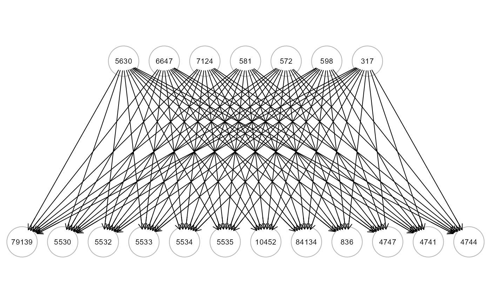
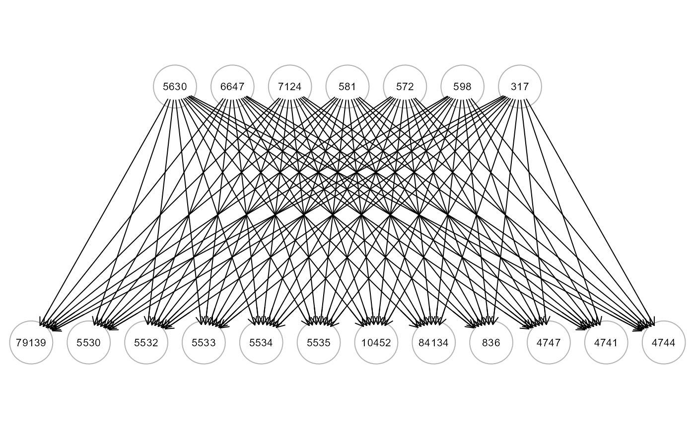

The function builds four Deep Neural Networks (DNN) models based on the topological structure of the input graph using the 'torch' language. The torch package is native to R, so it's computationally efficient and the installation is very simple, as there is no need to install Python or any other API, and DNNs can be trained on CPU, GPU and MacOS GPUs.
In order to install torch please follow these steps:
install.packages("torch")
install_torch(reinstall = TRUE)
For setup GPU or if you have problems installing torch package, check out the installation help from the torch developer.
Usage
SEMdnn(
graph,
data,
outcome = NULL,
algo = "layerwise",
hidden = c(10L, 10L, 10L),
link = "selu",
bias = TRUE,
dropout = 0,
loss = "mse",
validation = 0,
lambda = 0,
alpha = 0.5,
optimizer = "adam",
lr = 0.01,
batchsize = NULL,
burnin = 30,
thr = NULL,
nboot = 0,
epochs = 100,
patience = 100,
device = "cpu",
verbose = FALSE,
...
)Arguments
- graph
An igraph object.
- data
A matrix with rows corresponding to subjects, and columns to graph nodes (variables).
- outcome
A character vector (as.factor) of labels for a categorical output (target). If NULL (default), the categorical output (target) will not be considered.
- algo
A character value, indicating the DNN algorithm: "nodewise", "layerwise" (default), "structured", or "neuralgraph" (see details).
hidden units in layers; the number of layers corresponds with the length of the hidden units. As a default, hidden = c(10L, 10L, 10L).
- link
A character value describing the activation function to use, which might be a single length or be a vector with many activation functions assigned to each layer. As a default, link = "selu".
- bias
A logical vector, indicating whether to employ biases in the layers, which can be either vectors of logicals for each layer (number of hidden layers + 1 (final layer)) or of length one. As a default, bias = TRUE.
- dropout
A numerical value for the dropout rate, which is the probability that a node will be excluded from training. As a default, dropout = 0.
- loss
A character value specifying the at which the network should be optimized. For regression problem used in SEMdnn(), the user can specify: (a) "mse" (mean squared error), "mae" (mean absolute error), or "nnl" (negative log-likelihood). As a default, loss = "mse".
- validation
A numerical value indicating the proportion of the data set that should be used as a validation set (randomly selected, default = 0).
- lambda
A numerical value, indicating the strength of the regularization, \(\lambda\)(L1 + L2) for lambda penalty (default = 0).
- alpha
A numerical value, add L1/L2 regularization into the training. Set the alpha parameter for each layer to (1-\(\alpha\))L1 + \(\alpha\)L2. It must fall between 0 and 1 (default = 0.5).
- optimizer
A character value, indicating the optimizer to use for training the network. The user can specify: "adam" (ADAM algorithm), "adagrad" (adaptive gradient algorithm), "rmsprop" (root mean squared propagation), "rprop” (resilient backpropagation), "sgd" (stochastic gradient descent). As a default, optimizer = "adam".
- lr
A numerical value, indicating the learning rate given to the optimizer (default = 0.01).
- batchsize
Number of samples that are used to calculate one learning rate step (default = 1/10 of the training data).
- burnin
Training is aborted if the trainings loss is not below the baseline loss after burnin epochs (default = 30).
- thr
A numeric value [0-1] indicating the threshold to apply to the Olden's connection weights to color the graph. If thr = NULL (default), the threshold is set to thr = 0.5*max(abs(connection weights)).
- nboot
number of bootstrap samples that will be used to compute cheap (lower, upper) CIs for all input variable weights. As a default, nboot = 0.
- epochs
A numerical value indicating the epochs during which the training is conducted (default = 100).
- patience
A numeric value, training will terminate if the loss increases over a predetermined number of consecutive epochs and apply validation loss when available. Default patience = 100, no early stopping is applied.
- device
A character value describing the CPU/GPU device ("cpu", "cuda", "mps") on which the neural network should be trained on. As a default, device = "cpu".
- verbose
The training loss values of the DNN model are displayed as output, comparing the training, validation and baseline in the last epoch (default = FALSE).
- ...
Currently ignored.
Value
An S3 object of class "DNN" is returned. It is a list of 5 objects:
"fit", a list of DNN model objects, including: the estimated covariance matrix (Sigma), the estimated model errors (Psi), the fitting indices (fitIdx), and the parameterEstimates, i.e., the data.frame of Olden's connection weights.
"gest", the data.frame of estimated connection weights (parameterEstimates) of outcome levels, if outcome != NULL.
"model", a list of all MLP network models fitted by torch.
"graph", the induced DAG of the input graph mapped on data variables. The DAG is colored based on the Olden's connection weights (W), if abs(W) > thr and W < 0, the edge is inhibited and it is highlighted in blue; otherwise, if abs(W) > thr and W > 0, the edge is activated and it is highlighted in red. If the outcome vector is given, nodes with absolute connection weights summed over the outcome levels, i.e. sum(abs(W[outcome levels])) > thr, will be highlighted in pink.
"data", input data subset mapping graph nodes.
Details
Four Deep Neural Networks (DNNs) are trained with SEMdnn().
If algo = "nodewise", a set of DNN models is performed equation-by-equation (r=1,...,R) times, where R is the number of response (outcome) variables (i.e., nodes in the input graph with non-zero incoming connectivity) and predictor (input) variables are nodes with a direct edge to the outcome nodes, as poposed by various authors in causal discovery methods (see Zheng et al, 2020). Note, that model learning can be time-consuming for large graphs and large R outcomes.
If algo = "layerwise" (default), a set of DNN models is defined based on the topological layer structure (j=1,…,L) from sink to source nodes of the input graph. In each iteration, the response (output) variables, y are the nodes in the j=1,...,(L-1) layer, and the predictor (input) variables, x are the nodes belonging to successive: (j+1),...,L layers, which are linked with a direct edge to the response variables (see Grassi & Tarantino, 2025).
If algo = "structured", a Structured Neural Network (StrNN) is defined with input and output units equal to D, the number of the nodes. The algorithm uses the prior knowledge of the input graph to build the neural network architecture via a per-layer masking of the neural weights (i.e., W1 * M1, W2 * M2, ..., WL *ML), with the constraint that (W1 * M1) x (W2 * M2) x ... x (WL * ML) = A, where A is the adjacency matrix of the input graph (see Chen et al, 2023).
If algo = "neuralgraph", a Neural Graphical Model (NGM) is generated. As StrNN input and output units are equal to D, the number of the nodes. The prior knowledge of the input graph is used to compute the product of the absolute value of the neural weights (i.e., W = |W1| x |W2| x ... x |WL|), under the constraint that log(W * Ac) = 0, where Ac represents the complement of the adjacency matrix A of input graph, which essentially replaces 0 by 1 and vice-versa (see Shrivastava & Chajewska, 2023).
Each DNN model (R for "nodewise", L<R for "layerwise", and 1 for "structured" and "neuralgraph") is a Multilayer Perceptron (MLP) network, where every neuron node is connected to every other neuron node in the hidden layer above and every other hidden layer below. Each neuron's value is determined by calculating a weighted summation of its outputs from the hidden layer before it, and then applying an activation function. The calculated value of every neuron is used as the input for the neurons in the layer below it, until the output layer is reached.
If boot != 0, the function will implement the cheap bootstrapping proposed by
Lam (2002) to generate uncertainties (i.e., bootstrap 90%CIs) for DNN
parameters. Bootstrapping can be enabled by setting a small number (1 to 10) of
bootstrap samples. Note, however, that the computation can be time-consuming for
massive DNNs, even with cheap bootstrapping!
References
Zheng, X., Dan, C., Aragam, B., Ravikumar, P., Xing E. (2020). Learning sparse nonparametric dags. International conference on artificial intelligence and statistics, PMLR, 3414-3425. https://doi.org/10.48550/arXiv.1909.13189
Grassi, M., Tarantino, B. (2025). SEMdag: Fast learning of Directed Acyclic Graphs via node or layer ordering. PLoS ONE 20(1): e0317283. https://doi.org/10.1371/journal.pone.0317283
Chen A., Shi, R.I., Gao, X., Baptista, R., Krishnan, R.G. (2023). Structured neural networks for density estimation and causal inference. Advances in Neural Information Processing Systems, 36, 66438-66450. https://doi.org/10.48550/arXiv.2311.02221
Shrivastava, H., Chajewska, U. (2023). Neural graphical models. In European Conference on Symbolic and Quantitative Approaches with Uncertainty (pp. 284-307). Cham: Springer Nature Switzerland. https://doi.org/10.48550/arXiv.2210.00453
Lam, H. (2022). Cheap Bootstrap for Input Uncertainty Quantification. Winter Simulation Conference (WSC), Singapore, 2022, pp. 2318-2329. https://doi.org/10.1109/WSC57314.2022.10015362
Author
Mario Grassi mario.grassi@unipv.it
Examples
# \donttest{
if (torch::torch_is_installed()){
# load ALS data
ig<- alsData$graph
data<- alsData$exprs
data<- transformData(data)$data
group<- alsData$group
#...with train-test (0.5-0.5) samples
set.seed(123)
train<- sample(1:nrow(data), 0.5*nrow(data))
#ncores<- parallel::detectCores(logical = FALSE)
start<- Sys.time()
dnn0<- SEMdnn(ig, data[train, ], algo = "layerwise",
hidden = c(10,10,10), link = "selu", bias = TRUE,
nboot = 0, epochs = 32, verbose = TRUE)
end<- Sys.time()
print(end-start)
#str(dnn0, max.level=2)
dnn0$fit$fitIdx
parameterEstimates(dnn0$fit)
gplot(dnn0$graph)
table(E(dnn0$graph)$color)
#...with source nodes -> graph layer structure -> sink nodes
#Topological layer (TL) ordering
K<- c(12, 5, 3, 2, 1, 8)
K<- rev(K[-c(1,length(K))]);K
ig1<- mapGraph(ig, type="source"); gplot(ig1)
start<- Sys.time()
dnn1<- SEMdnn(ig1, data[train, ], algo = "layerwise",
hidden = 5*K, link = "selu", bias = TRUE,
nboot = 0, epochs = 32, verbose = TRUE)
end<- Sys.time()
print(end-start)
#Visualization of the neural network structure
nplot(dnn1, hidden = 5*K, bias = FALSE)
#str(dnn1, max.level=2)
dnn1$fit$fitIdx
mean(dnn1$fit$Psi)
parameterEstimates(dnn1$fit)
gplot(dnn1$graph)
table(E(dnn1$graph)$color)
#...with a categorical outcome
outcome<- factor(ifelse(group == 0, "control", "case")); table(outcome)
start<- Sys.time()
dnn2<- SEMdnn(ig, data[train, ], outcome[train], algo = "layerwise",
hidden = c(10,10,10), link = "selu", bias = TRUE,
nboot = 0, epochs = 32, verbose = TRUE)
end<- Sys.time()
print(end-start)
#str(dnn2, max.level=2)
dnn2$fit$fitIdx
parameterEstimates(dnn2$fit)
gplot(dnn2$graph)
table(E(dnn2$graph)$color)
table(V(dnn2$graph)$color)
}
#> Conducting the nonparanormal transformation via shrunkun ECDF...done.
#> Running SEM model via DNN...
#>
#> layer 1 : z10452 z84134 z836 z4747 z4741 z4744 z79139 z5530 z5532 z5533 ...
#> train val base
#> 0.3830909 Inf 0.9875000
#>
#> layer 2 : z842 z1432 z5600 z5603 z6300
#> train val base
#> 0.5071168 Inf 0.9875000
#>
#> layer 3 : z54205 z5606 z5608
#> train val base
#> 0.574218 Inf 0.987500
#>
#> layer 4 : z596 z4217
#> train val base
#> 0.7870750 Inf 0.9875001
#>
#> layer 5 : z1616
#> train val base
#> 0.8662748 Inf 0.9875001
#> done.
#>
#> DNN solver ended normally after 160 iterations
#>
#> logL:-40.972362 srmr:0.153875
#> Time difference of 13.73143 secs
 
#> Running SEM model via DNN...
#>
#> layer 1 : z10452 z84134 z836 z4747 z4741 z4744 z79139 z5530 z5532 z5533 ...
#> train val base
#> 0.464351 Inf 0.987500
#> done.
#>
#> DNN solver ended normally after 32 iterations
#>
#> logL:-21.207845 srmr:0.164237
#> Time difference of 3.402986 secs

#> Running SEM model via DNN...
#>
#> layer 1 : z10452 z84134 z836 z4747 z4741 z4744 z79139 z5530 z5532 z5533 ...
#> train val base
#> 0.464351 Inf 0.987500
#> done.
#>
#> DNN solver ended normally after 32 iterations
#>
#> logL:-21.207845 srmr:0.164237
#> Time difference of 3.402986 secs

 #> Running SEM model via DNN...
#>
#> layer 1 : zcase zcontrol
#> train val base
#> 0.007218269 Inf 0.987500012
#>
#> layer 2 : z10452 z84134 z836 z4747 z4741 z4744 z79139 z5530 z5532 z5533 ...
#> train val base
#> 0.4185528 Inf 0.9875000
#>
#> layer 3 : z842 z1432 z5600 z5603 z6300
#> train val base
#> 0.5245557 Inf 0.9875000
#>
#> layer 4 : z54205 z5606 z5608
#> train val base
#> 0.5877876 Inf 0.9875000
#>
#> layer 5 : z596 z4217
#> train val base
#> 0.7903771 Inf 0.9875001
#>
#> layer 6 : z1616
#> train val base
#> 0.8544232 Inf 0.9875001
#> done.
#>
#> DNN solver ended normally after 192 iterations
#>
#> logL:-40.890996 srmr:0.167383
#> Time difference of 17.33236 secs
#> Running SEM model via DNN...
#>
#> layer 1 : zcase zcontrol
#> train val base
#> 0.007218269 Inf 0.987500012
#>
#> layer 2 : z10452 z84134 z836 z4747 z4741 z4744 z79139 z5530 z5532 z5533 ...
#> train val base
#> 0.4185528 Inf 0.9875000
#>
#> layer 3 : z842 z1432 z5600 z5603 z6300
#> train val base
#> 0.5245557 Inf 0.9875000
#>
#> layer 4 : z54205 z5606 z5608
#> train val base
#> 0.5877876 Inf 0.9875000
#>
#> layer 5 : z596 z4217
#> train val base
#> 0.7903771 Inf 0.9875001
#>
#> layer 6 : z1616
#> train val base
#> 0.8544232 Inf 0.9875001
#> done.
#>
#> DNN solver ended normally after 192 iterations
#>
#> logL:-40.890996 srmr:0.167383
#> Time difference of 17.33236 secs
 #>
#> pink white
#> 5 26
# }
#>
#> pink white
#> 5 26
# }